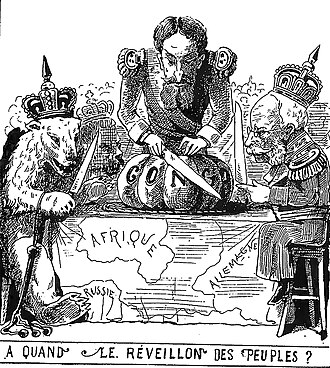
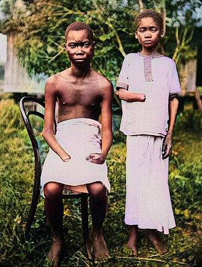

Part I · Imperialism · Chapter 2
Inherits: Opium Wars (ch. 1) · Feeds: Who started 1914 (ch. 4)
Scramble for Africa
In Berlin, between November 1884 and February 1885, delegates of fourteen states meet under a wall map of Africa and agree on the rules for claiming the parts of it that are still coloured blank. No African state is at the table. Thirty years later, two African states are still their own. What the classrooms that cover those thirty years do with them is the subject of this chapter.

Who takes Africa — and in whose sentence does an African do anything?
1 The boring facts
Dry scaffolding. These lines are the ruler; the ladder is the measurement.
- The Suez Canal opens in November 1869; Egypt borrows heavily to build and to modernise, and by 1876 its debts are under European management.
- 1882: after the Urabi movement, a British expedition defeats the Egyptian army and Britain takes control of Egypt, which stays formally Ottoman.
- 1881: in Sudan, Muhammad Ahmad ibn Abd Allah declares himself the Mahdi. Khartoum falls to his forces in January 1885; General Gordon is killed there. The Mahdist state rules from Omdurman until 1898.
- November 1884 – February 1885: the Berlin Conference. Its General Act recognises Leopold II’s personal rule over the Congo Free State and sets “effective occupation” as the test for a valid claim. Leopold transfers the territory to the Belgian state in 1908.
- 1 March 1896: at Adwa, Menelik II’s army defeats an Italian force. Ethiopia’s independence is confirmed by the Treaty of Addis Ababa that October.
- September 1898: an Anglo-Egyptian army destroys the Mahdist army outside Omdurman, then meets a French column at Fashoda on the White Nile. France withdraws.
- 1899–1902: the South African War. 1910: the Union of South Africa. 1912: Morocco becomes a French protectorate.
- By 1914, Ethiopia and Liberia are the only African states outside European rule. Historians usually date the partition’s acceleration to the 1880s and treat it as substantially finished before the First World War.
2 The ladder
Seven narrators who actually cover the partition, ordered from thinnest agency (a continent that colonises itself) to thickest (a named man who liberates a country). Ukraine’s volume starts in 1945, China’s is a national history, Germany’s is a National Socialism primer; they are in the receipts, not on the ladder. Kazakhstan’s book is national history and is never a world-event column here.
| Classroom | How Africa is taken | One-line tag |
|---|---|---|
| BY · Кошелев 2021 |
«Африка стала континентом классического колониализма. В начале XX в. только две африканские страны — Либерия и Эфиопия — оставались независимыми государствами.» “Africa became a continent of classical colonialism. At the beginning of the 20th century only two African countries — Liberia and Ethiopia — remained independent states.” |
Africa becomes; nobody takes |
| UK · Lowe 2013 |
“The European powers had taken part in a great burst of imperialist expansion in the years after 1880. Imperialism is the building up of an empire by seizing territory overseas. Most of Africa was taken over by the European states in what became known as the ‘the Scramble for Africa’; the idea behind it was mainly to get control of new markets and new sources of raw materials.” Mastering Modern World History, 5th ed. · ch. 1, “Imperial expansion after 1880,” p. 26 |
Taken over, by a plural noun |
| RU · Чубарьян 2023 |
«К началу Первой мировой войны вся Африка (кроме Эфиопии, Республики Либерии и части Марокко) была разделена между Великобританией, Францией, Германией, Италией, Бельгией, Португалией и Испанией.» “By the beginning of the First World War all of Africa (except Ethiopia, the Republic of Liberia and part of Morocco) had been divided among Great Britain, France, Germany, Italy, Belgium, Portugal and Spain.” Всеобщая история. Новейшая история 1914–1945, 10 кл., Просвещение 2023 · p. 21 |
Passive, with a guest list |
| IN · NCERT 2022+ |
“In Africa, Europeans traded on the coast, except in South Africa, and only in the late nineteenth century did they venture into the interior. After this, some of the European countries reached an agreement to divide up Africa as colonies for themselves.” Themes in World History, Class XI · “European Imperialism” box, p. 136; timeline entry “1880-90 Beginning of the European ‘Scramble for Africa’,” p. 130 |
An agreement, for themselves |
| US · OpenStax 2022 |
“The industrialized nations of Europe saw Africa, with its rich natural resources, as the great prize, and they moved quickly to seize it.” |
Seized, and the excluded are named |
| IT · Sabbatucci–Vidotto 2004 |
«La questione del Congo fu oggetto di una conferenza internazionale che fu convocata a Berlino per iniziativa di Bismarck nel 1884-85… oltre a dare una prima sanzione alla spartizione dell’Africa, codificò le norme che avrebbero dovuto regolarla anche nell’avvenire.» “The Congo question was the object of an international conference convened at Berlin on Bismarck’s initiative in 1884-85… besides giving a first sanction to the partition of Africa, it codified the norms that were to govern it in future as well.” |
Named men, named euphemism |
| SD · MoE 2009 |
«فصدَّقه الناس وآمنوا به لما تحلَّى به من صفات الصلاح والاستقامة والعزيمة الصادقة، فقادهم من نصر إلى نصر إلى أن حرَّر البلاد.» “So the people believed him and had faith in him, for the righteousness, uprightness and true resolve he showed; and he led them from victory to victory until he liberated the country.” |
He led them; he liberated the country |
3 The tell
Every book on this ladder agrees on the outcome. By 1914 nearly the whole continent answers to a European capital, and two states do not. The disagreement is about who is standing in the sentence while it happens.
The top three rows are a passive belt. Belarus writes the strongest version of it: Africa became a continent of classical colonialism, as though colonialism were weather. The powers arrive one clause later, in a by-phrase, after the territory “was divided.” Russia’s single sentence is the same construction with a longer guest list — seven states named, none of them the subject of a verb, and Russia’s own participation in “the seizure of territories” recorded a page earlier in the general case, not the African one.
Then there is Lowe. The United Kingdom holds the largest share of the thing being described; in a survey that runs past page 600, the Scramble for Africa gets three sentences on page 26, inside a list of the causes of the First World War. “Most of Africa was taken over by the European states.” Britain does not appear as a subject. Nothing in the paragraph is dated except “after 1880,” and nobody in it has a name. Search the rest of the book: no Berlin Conference in this section, no Leopold, no Congo Free State, no Fashoda, no Omdurman, no Menelik, no Mahdi. One African battle of the period does appear — Adowa, on page 73, half a century out of place, as the humiliation Mussolini was avenging in 1935.
India’s NCERT is four lines long and puts a live verb in: some of the European countries reached an agreement to divide up Africa as colonies for themselves. Indefinite subject, no names, but somebody decided something and benefited. It is also the only column that says where the Europeans had been standing before the partition — on the coast — and how late they left it, which is the fact the thread below is built on. OpenStax goes further in the only direction that costs a Western survey anything: it names the people who were not consulted. “Without input from Africans” is a small phrase doing large work — it converts an absence into a fact about the room. Sabbatucci–Vidotto give the fullest European machinery: Bismarck convening, Leopold II behind a humanitarian association, the Free State as “a paradoxical euphemism,” the English going up the continent and the French marching across it.
“What is the difference between ghazw (invasion) and fatḥ (conquest)? And which of the two is it correct to apply to the Turkish–Egyptian military movement in Sudan in the year 1821 CE?”
SD · التاريخ للصف الثالث (2009) · revision lesson, p. 3 — a homework questionThe Sudanese book is the only one that asks the student to pick the verb. It is also the only one where the country is a subject rather than an object. Unit One — “The Mahdist Revolution and State in Sudan, 1881–1899” — runs from page 1 to page 55 of a 267-page book: eleven lessons, with the Mahdi’s birthplace, his teachers, his emirs, his letters, and a map exercise. Unit Two carries the story through the Condominium to 1953. Khartoum in 1885 is not captured; it is liberated. The 1898 reconquest is not a reconquest; it is “the invaders.” Fifty-five pages against Lowe’s three sentences is not a difference of opinion. It is a difference in what the event is for: for Khartoum the Scramble is the prologue to a national origin story, and for London it is a bullet point on the way to Sarajevo.
Counting the dead sorts the books the same way. Belarus reports that at Adwa the Italians “lost about 11 thousand soldiers,” and that subduing the Boer republics “cost them 28 thousand men killed.” OpenStax reports six thousand Italians killed at Adwa and three thousand captured. The two books are not quite contradicting each other — “lost” and “killed” are different measures — but they are doing the same thing: the number belongs to the European army. Menelik II wins the battle in both books and his losses are absent from both. The Congo Free State gets OpenStax’s most graphic paragraph — a hand cut from each victim “to maintain a tally of the dead” — and no total at all. In this set exactly one classroom counts African dead, and they are its own: ten thousand Ansar killed in a single morning at El Obeid, 8 September 1882, in a chapter whose title calls that campaign a liberation.
One more word behaves strangely across the columns. Fashoda is covered by two of the seven — Italy and the United States — which under this book’s rule makes it a signature topic rather than an omission. For both, it is the name of an Anglo-French near-war on the Nile, and Sabbatucci–Vidotto add the consequence that matters for our next Part: France withdrew, the temperature dropped, and the episode “opened the road to a closer understanding between the two powers.” Fashoda appears five times in the Sudanese book as well — as a town, with a governor, that beaten soldiers ran to. Same six letters. In one classroom it is a diplomatic incident; in the other it is a place where people live.
4 The thread
India’s four lines carry a date the other six columns never explain. Europeans traded on the coast, and went inland only at the end of the nineteenth century. They had been trading on those coasts since the 1480s. The motive in Lowe’s paragraph — new markets, new raw materials — was four hundred years old before anybody acted on it past the beach. So the question the ladder leaves open is not why Europeans wanted Africa. It is why the 1880s.
One book in this corpus prints half the answer, one page before its own account of the partition, in a passage about a tree.
What that tree did is arithmetic. West Africa killed Europeans faster than any conquest could be budgeted for: the British expedition that steamed up the Niger in 1841 put about 150 Europeans into the river, and within two months more than forty of them were dead of fever and the ships had turned back. Thirteen years later William Balfour Baikie took a steamer up the same river and the Benue for four months, dosed every European on board with quinine daily before anyone was ill, and brought all of them home. One river, two expeditions, and the difference between them was a dose. Then the supply problem was solved the way empires solved supply problems: cinchona seed went from the Andes to plantations in Dutch Java, and by the 1870s quinine was cheap enough to issue to a garrison rather than reserve for a governor. Add shallow-draught steamers, which could go up rivers that sailing ships could not, and the map changed at both ends at once: the interior stopped being lethal in the same decade that Berlin made effective occupation the test of a claim.
The seed was the second performance of a trick this book has already watched. Chapter 1 ends with tea taken out of China and replanted in British India; cinchona was taken out of the Andes and replanted in Asian colonies in the same century, by the same botanical services, on the same reasoning — a plant that grows in one place under somebody else’s sovereignty is a supply problem, and the solution is to move the plant.
None of which caused the Scramble. Quinine did not put the motive in anybody’s head — the motive had been sitting on those coasts for four centuries, and the men who acted on it in 1884 wanted what the men of 1584 had wanted. What the tree removed was the constraint. Nothing changed in the wanting; what changed was the mortality.
The bitterness in tonic water is that constraint, still on the shelf. Quinine is what makes the drink bitter, the tonic was drunk because the dose had to go down daily, and gin and sugar went into it to make the dose drinkable; the bottles that say “Indian tonic water” are still naming the colony where the habit was formed. A modern bottle holds a fraction of a prophylactic dose — the drink outlived its job. It is a fair guess that most of the people who order one have never been told what it was for.
Now the count. One classroom in eleven names quinine at all: OpenStax, in the section on the means of imperialism, among the steamboats and the machine guns, one page before its own Scramble section opens on page 351. It gets as far as a development “that assisted Europeans in their exploitation of the African interior,” and stops. None of the eleven joins the tree to the calendar — to why the move inland that India dates to the late nineteenth century happened then, and not in 1750.

5 Credit where due
Fairness, paid in installments
MoE Sudan (SD) takes the depth lead and the agency lead at once, and the two are not the same prize. Fifty-five pages let it do what no other book here attempts: name the Sudanese side of a colonial war down to individual emirs, count its own dead, and hand the student the naming problem as homework — ghazw or fatḥ, invasion or conquest, you decide. It is also the narrator with the least distance from the events, and the chapter it writes is a national one; distance and depth trade against each other here in the open.
OpenStax (US) earns the credit line for the single most useful clause in the corpus on this topic: “without input from Africans.” It also supplies the one measurement that makes the thirty years legible — about 10 per cent of the continent under European control at the start, about 90 per cent by the end — and it does not flinch at the Congo Free State. It is a survey written far from the events, and it uses that distance well.
Sabbatucci–Vidotto (IT) is the only book that stages the partition as a sequence with causes: Egyptian debt, the occupation of 1882, French resentment, the Congo dispute, Berlin, the race inland, Fashoda, and borders “traced on the geographic map.” Italy is a minor player in the story it tells and is not spared in it. That combination is why this column keeps earning space in Part I.
6 Where this stops being true
Limits
This ladder is seven books whose syllabus reaches the 1880s. It is not “the world,” and it is not seven countries — it is seven pinned editions. Ukraine’s volume begins in 1945, China’s is a national history that touches Africa only as background to the Opium War, and Germany’s is a National Socialism booklet. Those zeros are syllabus boundaries, not avoidance of the Scramble.
The Sudanese lines above are the weakest evidence in this chapter and are marked accordingly. The Arabic extraction from that PDF is ligature-mangled — letters decompose and reorder, so the strings cannot be searched or copied. Every Arabic quotation here has been reconstructed to standard orthography from the mangled page and from a machine translation used only for discovery. All four must be read against the printed page before this chapter ships. Page numbers for the Sudanese book are printed-page numbers, eight less than the PDF’s.
Kept verbatim because errors are data: the Sudanese book lists “Berlin Conference 1878 CE, Berlin Conference 1884 CE” as the two meetings that divided spheres of influence in Asia and Africa. The partition conference is the one of 1884–85; the 1878 meeting is conventionally the Congress of Berlin, which settled a Russo-Turkish war. Calling both a “Berlin Conference” is a compression rather than an invention, and it is one OpenStax half-shares: its own France section sends the powers to “the 1878 Congress of Berlin to decide the fate of the defeated Ottoman Empire’s possessions in North Africa,” where France “received Tunisia.” Two classrooms, one date, two very different reasons for keeping it.
A second verbatim keep: the Sudanese lesson heading dates the liberation of El Obeid to July 1882 while its own narrative describes the assault of 8 September 1882 and the siege that followed. That wobble should also be checked against the printed page before it is called anything.
Finally, none of these books is a history of Africa. Six of the seven are histories of Europe with an African chapter, and the seventh is a history of one country. If you want the Scramble as it was experienced from Kano, Bulawayo or Kinshasa, every column here will leave you unsatisfied — including the one that runs fifty-five pages.
7 Receipts
- SD — وزارة التربية والتعليم, التاريخ للصف الثالث (Khartoum 2009). Unit One, “The Mahdist Revolution and State in Sudan 1881–1899,” printed pp. 1–55 (eleven lessons); El Obeid p. 19; Unit Two, Condominium, pp. 56–112; Berlin conferences and the occupation dates, p. 188. Printed pages = PDF pages − 8.
- US — OpenStax, World History, Volume 2: from 1400 (2022), ch. 9 “Expansion in the Industrial Age”: Scramble and Berlin Conference pp. 351–352; Congo Free State p. 355; Adwa p. 356; Fashoda Incident p. 359; Force Publique pp. 368–369.
- IT — G. Sabbatucci & V. Vidotto, Il mondo contemporaneo (Laterza 2004), §7.5 “La spartizione dell’Africa”: pp. 131, 142–144.
- BY — В. С. Кошелев и др., Всемирная история, 11 кл. (БГУ 2021): Africa p. 72; partition among the powers p. 74; Adwa p. 79; South African War and “completed the territorial division of the world” p. 80.
- RU — А. О. Чубарьян, Всеобщая история. Новейшая история 1914–1945 гг., 10 кл. (Просвещение 2023): “New Imperialism” pp. 20–23; Africa divided p. 21; Anglo-French agreements on Africa p. 24.
- IN — NCERT, Themes in World History, Class XI (post-2022 rationalized): timeline p. 130; “European Imperialism” box p. 136; conclusion p. 183.
- UK — Norman Lowe, Mastering Modern World History, 5th ed. (Palgrave Macmillan 2013): the entire Scramble, ch. 1 §(c) “Imperial expansion after 1880,” p. 26. 0 mentions Berlin Conference, Leopold II, Congo Free State, Fashoda, Omdurman, Menelik, the Mahdi — in the Scramble section or anywhere in the book’s treatment of the partition. Adowa: one line, p. 73, as background to Mussolini’s 1935 invasion.
- 0 in-scope UA (1945–2018 syllabus) · CN (national history; Africa only as Opium-War background) · DE (NS 1939–1945 booklet) · KZ (national history — not a world-history column)
Now look up what your textbook calls it.